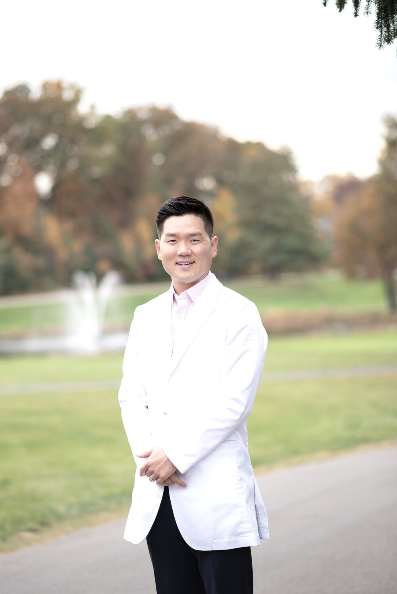

We know how important a great smile is to looking and feeling good. Dr. Charles Yun and our Frederick team are committed to the highest quality in family and cosmetic dentistry — with today's latest technology, and a staff that makes every visit affordable and comfortable.

Dental Services
From routine checkups to full smile makeovers, our practice offers a wide variety of procedures to uniquely fit your needs.
Meet Dr. Yun
Dr. Yun is committed to excellence in dentistry and uses the latest techniques to give you a beautiful, healthy smile. He believes strongly in education — preventing oral health problems before they occur — and makes sure every patient leaves fully informed about their dental health.
"To make every patient who leaves the practice leave with a smile on his or her face. I will provide exceptional dental care and treat everyone as I would my own family."
Dental Concerns
Healthy gums shouldn't bleed. We diagnose the cause and provide periodontal therapy to get you back on track.
From dental implants to bridges, dentures, and partials — modern restorative options that look and feel natural.
Custom night guards protect your teeth and ease jaw strain while you sleep.
Visit Us
Frederick Dental Suite
184 Thomas Johnson Dr, Suite 202
Frederick, MD 21702
Call or email for current office hours and same-week availability — emergency cases are seen promptly.